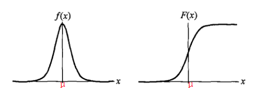

逻辑斯蒂回归(logistic regression)是统计学习中的经典分类方法。逻辑斯蒂回归模型属于对数线性模型。
6.1 逻辑斯蒂回归模型
6.1.1 逻辑斯蒂分布
定义6.1(逻辑斯蒂回归) 设X是连续随机变量，X服从逻辑斯蒂分布是指X具有下列分布函数和密度函数:
式中，为位置参数，为形状参数。
逻辑斯蒂分布的密度函数f(x)和分布函数F(x)的图形如下所示：

分布函数F(x)属于逻辑斯蒂函数，其图形是一条S形曲线(sigmoid curve)。该曲线以点 为中心对称，即满足：
曲线在中心附近增长速度较快，在两端增长速度较慢。形状参数的值越小，曲线在中心附近增长的越快。
6.1.2 二项逻辑斯蒂回归模型
二项逻辑斯蒂回归模型是一种分类模型。由条件概率分布P(Y|X)表示，形式为参数化的逻辑斯蒂分布。随机变量X取值为实数，随机变量Y取值为1或0。我们通过监督学习的方法来估计模型参数。
定义6.2(逻辑斯蒂回归模型) 二项逻辑斯蒂回归模型是如下的条件概率分布:
这里，是输入， 是输出，均为参数，w称为权重向量，b称为偏置，w.x表示w和x的内积。
如何使用上述条件概率分布进行分类？
对于给定的输入实例x，按照式(6.3)和式(6.4)可以求得P(Y=1|x)和P(Y=0|x)。逻辑斯蒂回归比较两个条件概率值的大小，将实例x分到概率值较大的那一类。
逻辑斯蒂回归模型的特点
为了方便，令，。这时，逻辑斯蒂回归模型如下:
事件几率(odds)是指该事件发生的概率与改时间不发生的概率的比值。
如果事件发生的概率是p，那么该事件的几率是，该事件的对数几率或logit函数是:
对逻辑斯蒂回归而言，由式(6.5)和式(6.6)得:
也就是说，在逻辑斯蒂回归模型中，输出Y=1的对数几率是输入x的线性函数。
换个角度来看，logit函数的值域是实数域，通过逻辑斯蒂回归模型可以把logit函数的实数域映射为[0,1]，相当于概率。
6.1.3 模型参数估计
给定训练数据集，其中，，
设:
似然函数为:
对数似然函数为:
对求极大值，得到w的估计值。
问题就变成了以对数似然函数为目标函数的最优化问题。
6.1.4 多项逻辑斯蒂回归
将二项逻辑斯蒂回归推广到多项逻辑斯蒂回归，用于多分类。
假设离散型随机变量Y的取值集合是{1,2,…,K}，那么多项逻辑斯蒂回归模型是:
这里，，。
6.1.5 梯度下降法
根据6.1.3中得到的对数似然函数，我们可以通过梯度下降法进行求解。
目标函数:
最大化对数似然函数等价于最小化目标函数。
假设样本，n为样本特征维数，，表示权重向量与偏置。现在对权重向量w中的每一个维度进行求偏导数，可得:
那么，权重的更新规则为:
由于，因此权重的更新规则应为:
特别需要指出:
此处，为偏置。
1 | class LogisticRegression(object): |
6.1.6 目标函数正则化
为了防止模型过拟合，引入正则化项，目标函数变为:
相应的权重的更新规则也应该改变:
1 | class LogisticRegression(object): |
6.2 softmax regression
softmax回归是logistic回归的推广，它属于多分类模型。仿照logistic的假设函数，softmax的假设函数可表示为:
注意你可以看到，此处与6.1.4中的多项逻辑斯蒂回归有所区别，这是因为6.1.4中，我们把最后一类的logit值设置为1，因此没有对应exp表达式。而此处的最后一类对应的logit值为。
6.2.1 目标函数
通过对数似然来得到代价函数，并通过最大化对数似然函数来求解参数。对数似然函数如下:
这里的是一个矩阵。需要逐个求出，i=1,2,…,k。利用logistic二分类的思想，在求的时候把它视为正样本的参数，其他的为常量，即负样本的参数。